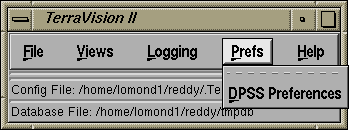

5. The "Prefs" Menu

The Prefs menu from the main TerraVision window is used to control
various global preference settings for the application. Currently
this menu has only one entry, for controlling DPSS settings.
DPSS Preferences
The DPSS Preferences dialog lets you set various global
characteristics of TerraVision's interaction with DPSS (Distributed
Parallel Server Systems). The current options include:
- Full DPSS server reads : this option controls
TerraVision's behaviour when it is request to re-reads a DPSS server
via the "File/Open Dataset/Options" dialog. By default, TerraVision
will perform an incremental read, i.e. when it contacts the DPSS
server it will only ask for information about datasets that are new
from the last time that it contacted that server. If this option is
checked, then TerraVision will perform a full server read, i.e. it
will find the list of all datasets on the server and ask for
information about each one of those (which will take more time).
- Request Delay (secs) : TerraVision sends a request list
of all the tiles that it needs to the DPSS master. This value
specifies the time between sending successive request lists. Smaller
values mean tile requests are sent to the master more often, and so
you are more likely to get the tiles you need sooner; however, if you
send too many requests too fast then you can swamp the master so that
it never has time to respond to your requests. The default value of
0.3 seconds seems to give a good trade-off.
User Guide Contents /
TerraVision Home Page